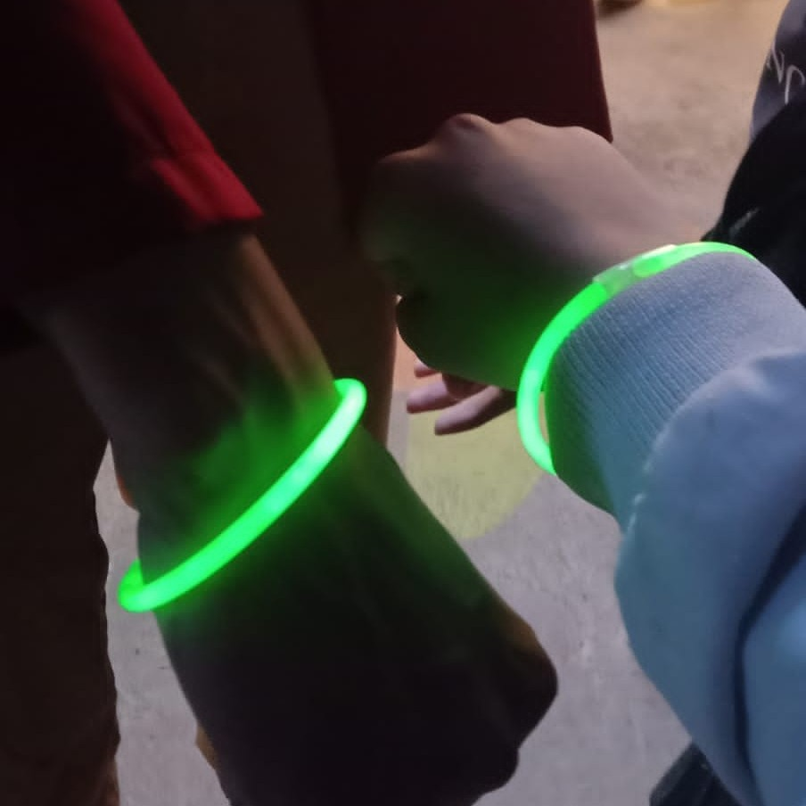
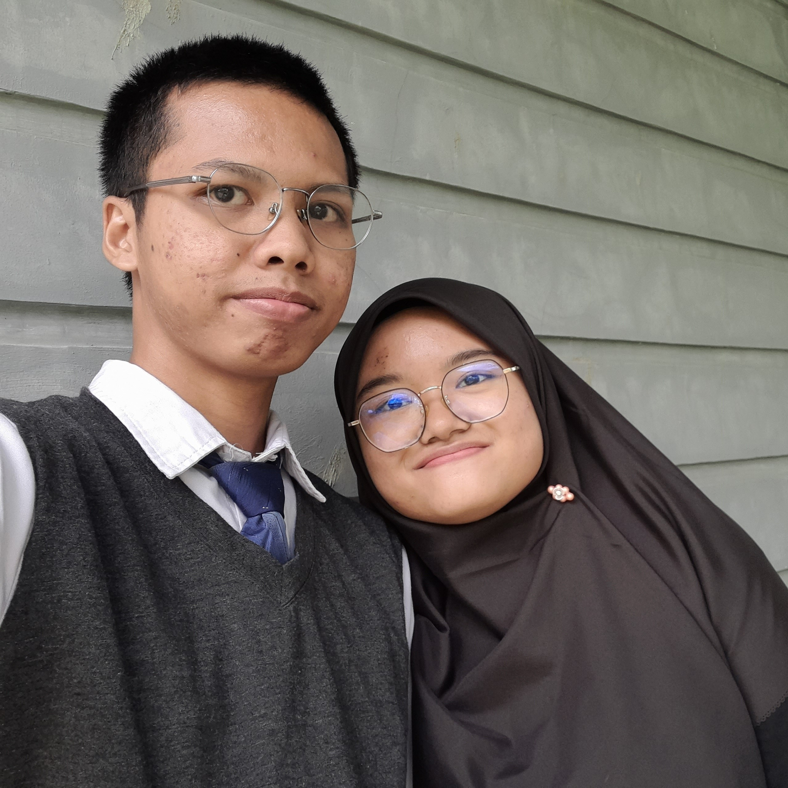
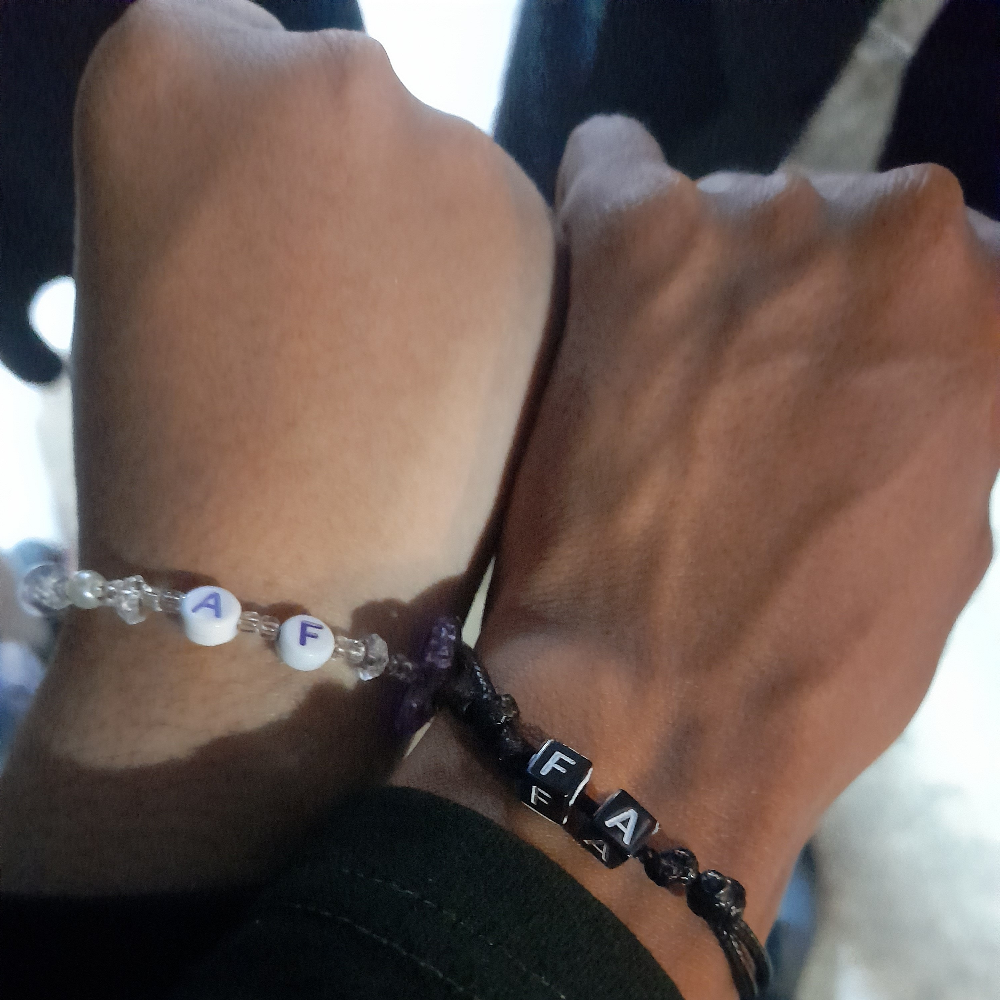
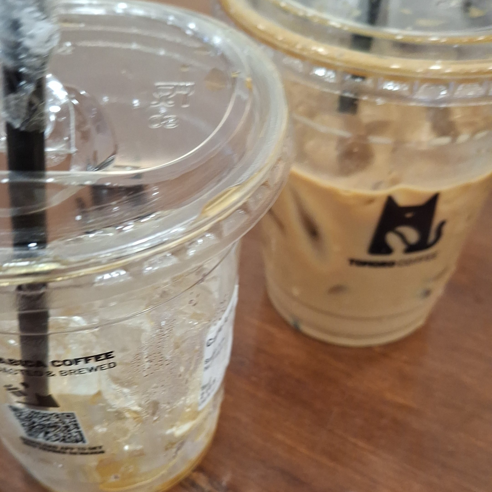
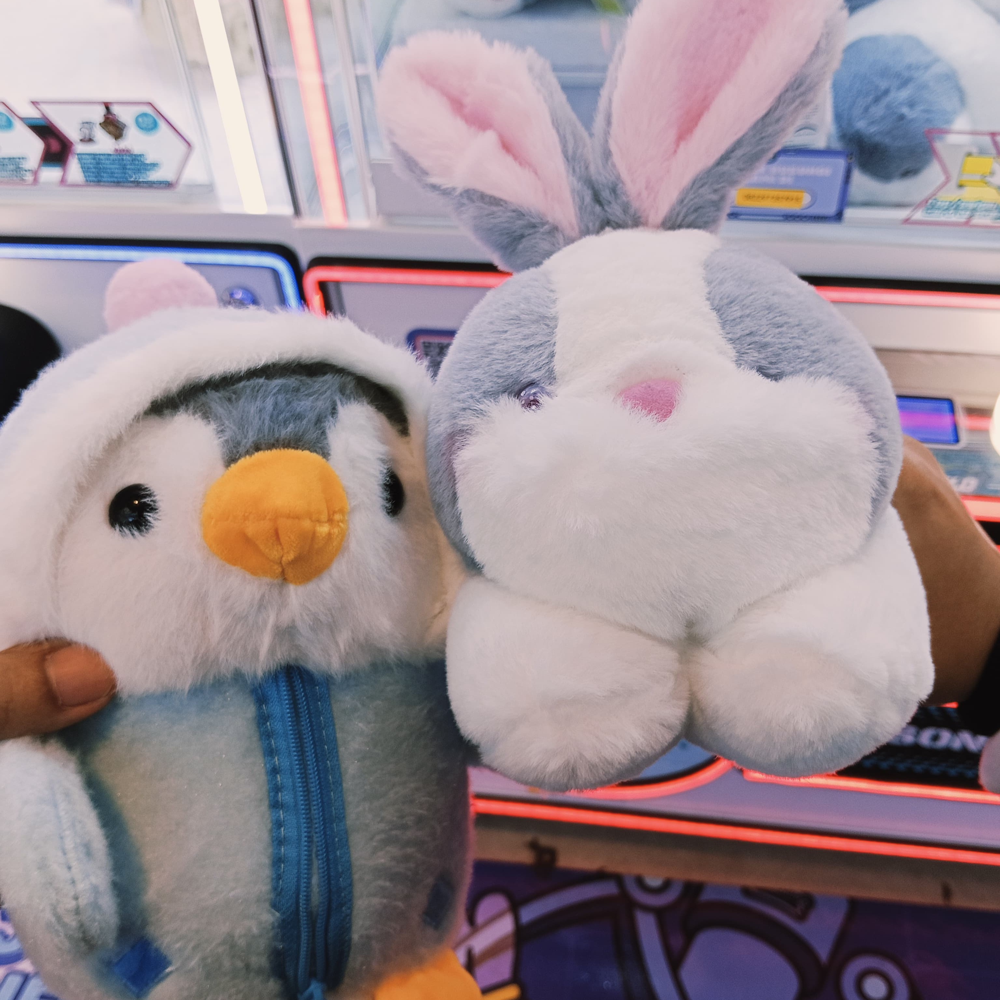
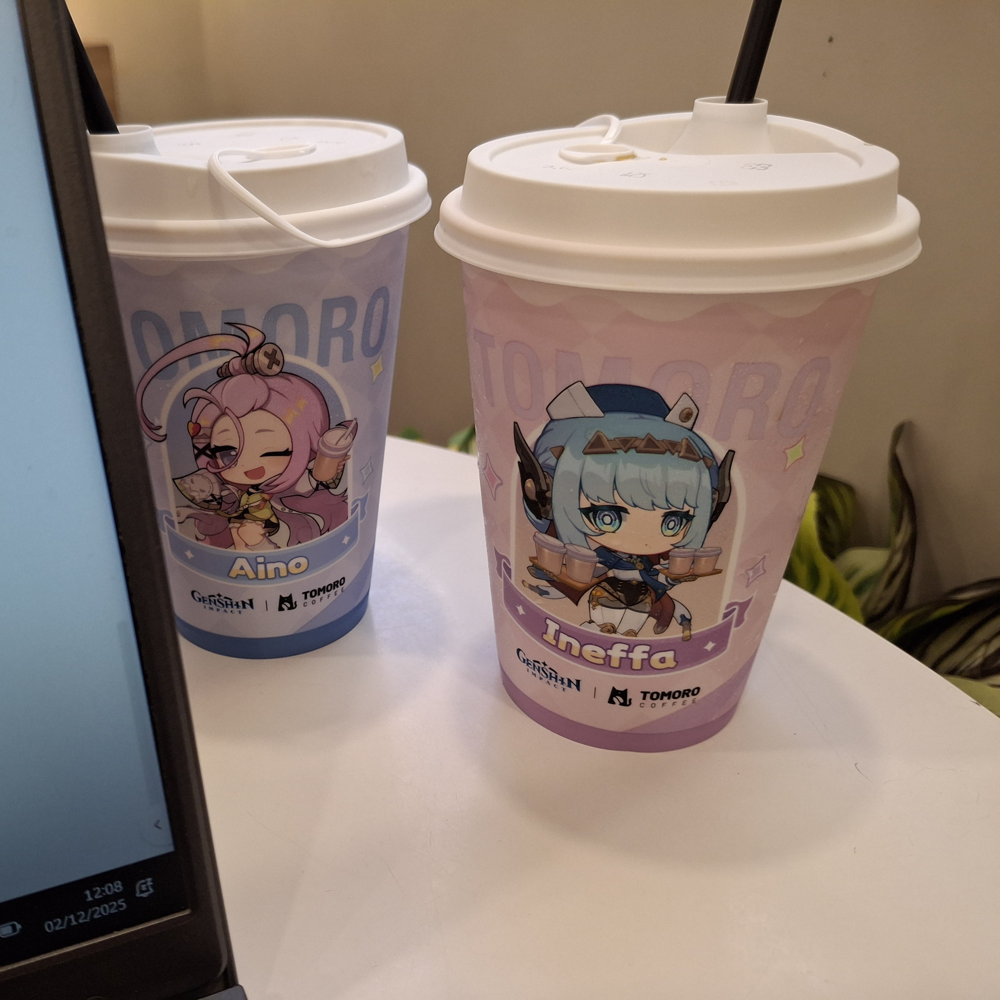
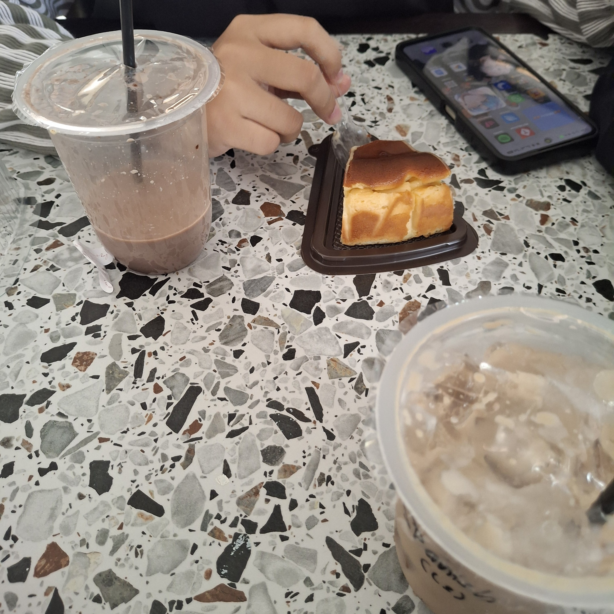
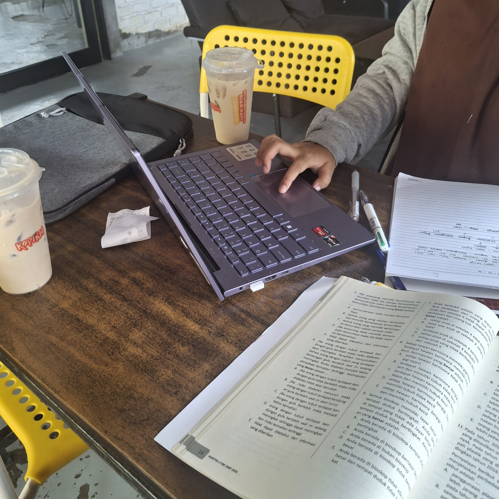

Tanggal 10 Agustus 2024
Kita pergi ke event bareng di Alaya, aku cosplay Luffy waktu itu dan ga sengaja aku ngomong hal yang malu banget.

Tanggal 9 September 2024
Kita ada kegiatan foto KTP di sekolah, aku udah siap pakai baju yang bagus buat difoto. Eh, malah ga sempat ikut foto di sekolah. Akhirnya aku malah nyusul fotonya di Convention hall dan kita ketemu lagi malamnya.

Tanggal 14 Desember 2024
Setelah semingguan kita jadi babu panit HUT sekolah, pas Finale Party pun kita masih harus kerja. Tapi begitu konsernya selesai, akhirnya kita bisa nikmatin jajanan yang dijual pas HUT terus terakhir aku antar kamu pulang. Semingguan penuh aku jadi ojek pribadimu (just kidding).

Tanggal 9 Agustus 2025
Hari sabtu aja kita tetap ke sekolah buat foto year book. Tapi gapapa, soalnya habis itu kita ke Tomoro bareng buat ngopi.

Tanggal 20 Agustus 2025
Kita yang di kampus edu kebagian jadwal bersih-bersih kelas sementara yang di kampus A lomba 17-an. Kita di sekolah cuman ampe jam 10 doang, pas pulang kita langsung ke SCP, mall-nya literally baru buka itu wkwk dan akhirnya kita milih buat coba main claw machine, entah kenapa aku hoki banget waktu itu ampe bisa dapat 2 boneka, dan akhirnya kita misah karena kamu mau lanjut nonton movie Kimetsu no Yaiba sama teman-temanmu.

Tanggal 2 Desember 2025
Last day ujian semester 1 kelas 12. Aku ngajak kamu ke Tomoro lagi buat nongkrong, kebetulan lagi ada collab sama Genshin juga jadi sekalian aku beli merch-nya dan kita ngerjain LKPD seni budaya bareng-bareng di sana.

Tanggal 18 Januari 2026
Sebenarnya sudah janjian mau jalan bareng dari hari Jumat pas HUT, tapi karena ada kendala pas hari itu dan minggu depannya kita ada sidang KTI, akhirnya baru kesampaian 2 minggu setelahnya. Aku ngajakin kamu ke kafe yang pengen aku kunjungin terus kita ngobrolin tentang kuliah, game, dan banyak lagi. Terakhir aku antarin kamu ke Indomaret dekat kafenya dan aku lanjut ke tempat karaoke sama teman-temanku, sorry ya aku ga bisa anterin pulang hari itu.

Tanggal 30 Januari 2026
Kamu ngajakin aku jalan tapi kita sama-sama belum tau tujuannya kemana wkwk. Akhirnya kamu minta buat ditemenin beli alat-alat P3K dan aku ngide buat ajakin kamu ke Kopiria dekat rumahku, kita belajar soal dan materi buat UTBK. Pas mau pulang malah hujan deras, terpaksa kita ngungsi sebentar, tapi karena hujannya ga reda-reda akhirnya kita maksa pulang juga.